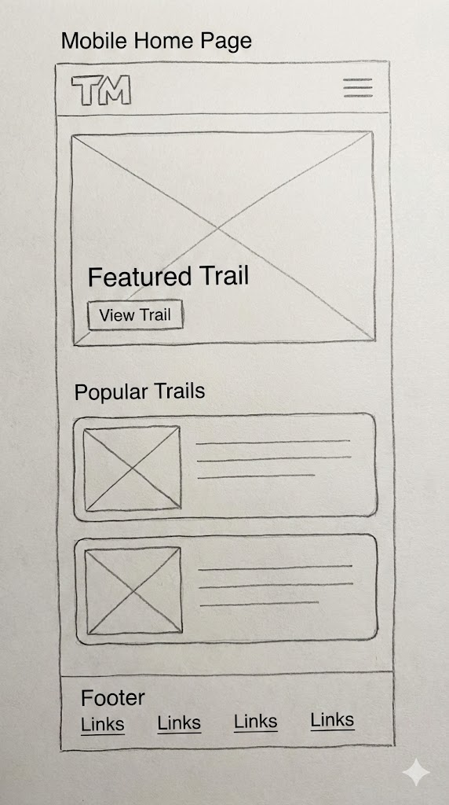
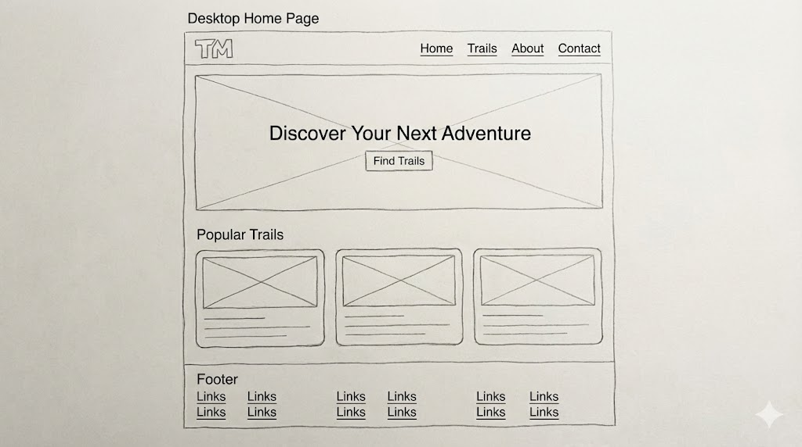

Site Name
Trail Master
I chose the name "Trail Master" because it sounds authoritative yet encouraging. It implies that the user can master their outdoor journey. The logo will feature a stylized mountain peak with a winding path leading to the top, symbolizing the journey of the hike.
Optional Domain: trailmasterutah.com
Site Purpose
The site provides a hub for local hiking enthusiasts to discover new trails, filter them by difficulty (Easy, Moderate, Hard), and keep a personal log of trails they wish to visit. It solves the problem of not knowing where to go for a weekend adventure by providing curated data including length, difficulty, and visual previews.
Scenarios
These are questions that potential visitors (Target Audience) might ask:
- Scenario 1: "I am looking for a beginner-friendly hike to take my family on this Saturday. Where can I find a list of 'Easy' rated trails that are under 3 miles long?"
- Scenario 2: "I found a trail I really like on this website, but I can't hike it until next month. Is there a way for me to save this trail to a 'Bucket List' so I don't forget it?"
Color Schema
The color palette is inspired by nature. Forest Green represents the trees and nature, while Burnt Orange represents the earth and serves as an energetic accent color for call-to-action buttons.
Primary
(Nav/Headings)
Secondary
(Buttons/Links)
Accent
(Backgrounds)
Text
(Body Copy)
Typography
Headings: Roboto
Aa Bb Cc Dd - The quick brown fox jumps over the lazy dog.
I chose Roboto for headings because it is bold, geometric, and very easy to read on mobile screens. It provides a modern feel to the application.
Body Text: Open Sans
Aa Bb Cc Dd - The quick brown fox jumps over the lazy dog.
I chose Open Sans for the body text because it is friendly and legible. It pairs well with Roboto and ensures that trail descriptions are easy to read.
Wireframes
Below are the wireframe sketches for the Home Page. The layout features a Hero image, a "Featured Trail" section, and a navigation bar that adapts to screen size.
Mobile View

Desktop View
